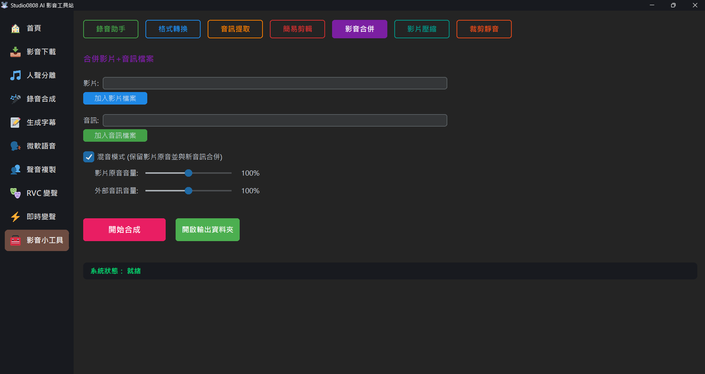

影音合併 (Video Merger) 是一套專門處理「無聲影片與純音源疊加」與「原音伴奏重新混縮」的微調工具。常被用於取代傳統剪輯軟體耗時的重新轉檔流程。
💡 提示：合成後的專案會自動存放在 Outputs/Tools 資料夾。
A: 純替換是一種所謂的封裝檔替換 (Remux) 作業，不需要重新編碼便能完成。但若您啟用「混音」，則系統必須先拆解雙邊軌道重新渲染音波才疊加合成，所需時間會依照檔案大小與位元率浮動。
A: 抱歉，簡易的影音合併只支援「一個影像來源＋一個外部匯入音訊來源」之混合。若需更多軌道混和，請使用專業的 DAW (數位音頻工作站)。